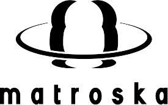

MPEG (Moving Picture Experts Group)
开发时间: 1988年
开发者: MPEG工作组
特点: MPEG是一种广泛使用的视频压缩标准，包括MPEG-1、MPEG-2、MPEG-4等多个版本。MPEG-1常用于VCD，MPEG-2用于DVD和数字电视，MPEG-4则用于网络流媒体和移动设备。
适用场景: 适用于多种设备和平台，兼容性极强。
MP4 (MPEG-4 Part 14)
开发时间: 2001年
开发者: MPEG工作组
特点: MP4是一种容器格式，可以包含视频、音频、字幕等多种数据。它基于MPEG-4标准，支持高效的视频压缩和流媒体传输。
适用场景: 广泛用于网络视频、移动设备和社交媒体平台。
 公司是MPEG系列代理/版权人
公司是MPEG系列代理/版权人
MKV (Matroska Video)

开发时间: 2002年
开发者: Matroska团队
特点: MKV是一种开放的多媒体容器格式，支持多种视频、音频和字幕格式。它的灵活性极高，常用于高清视频和复杂的多媒体项目。
适用场景: 适用于高清视频、多音轨和多字幕的复杂视频项目。
WEBM
开发时间: 2010年
开发者: Google
特点: WEBM是一种专为网络设计的开放视频格式，基于Matroska容器格式，使用VP8或VP9视频编码和Vorbis或Opus音频编码。它具有高效的压缩率和良好的网络流媒体支持。
适用场景: 主要用于HTML5视频和网络流媒体。
OGG/OGV (Ogg Video)
开发时间: 2000年
开发者: Xiph.Org基金会
特点: OGG是一种开放的多媒体容器格式，通常用于存储Theora视频和Vorbis音频。OGV是OGG格式的视频文件扩展名。
适用场景: 适用于开源项目和网络视频。
WMV (Windows Media Video)

开发时间: 1999年
开发者: 微软
特点: WMV是微软开发的视频压缩格式，常用于Windows平台。它具有较高的压缩率，适合网络流媒体和本地播放。
适用场景: 适用于Windows平台和宽带用户。
RM/RMVB (RealMedia/RealMedia Variable Bitrate)
开发时间: 1997年
开发者: RealNetworks
特点: RM和RMVB是RealNetworks开发的视频格式，RMVB是RM的变种，支持可变比特率，能够在低带宽下提供较好的视频质量。
适用场景: 适用于窄带和ISDN宽带用户。
FLV (Flash Video)
开发时间: 2002年
开发者: Adobe
特点: FLV是Adobe Flash Player使用的视频格式，广泛用于网络视频流媒体。虽然Flash技术已逐渐被淘汰，但FLV格式仍然在一些平台上使用。
适用场景: 适用于网络视频流媒体。
MOV/QT (QuickTime File Format)
开发时间: 1991年
开发者: 苹果公司
特点: MOV是苹果公司开发的视频容器格式，常用于QuickTime播放器。它支持多种视频和音频编码，适合高质量视频存储和编辑。
适用场景: 适用于苹果设备和高质量视频编辑。
EMV (Emilia Video)
开发时间: 2016年
开发者: 雷姆网络有限公司 (RemNetworks) 和灵希电子
特点: EMV是专为Emilia Player开发的视频格式，开放且支持多种带宽适配，适合不同网络环境下的视频播放。
适用场景: 适用于窄带、ISDN宽带、300K宽带、百兆、千兆宽带用户。
REMV (Rem Video File)
开发时间: 2017年
开发者: 雷姆网络有限公司 (RemNetworks)
特点: REMV是专为RemPlayer开发的通用视频格式，开放且支持多种设备和网络环境。
适用场景: 适用于多种网络环境和设备，属于通用视频格式。